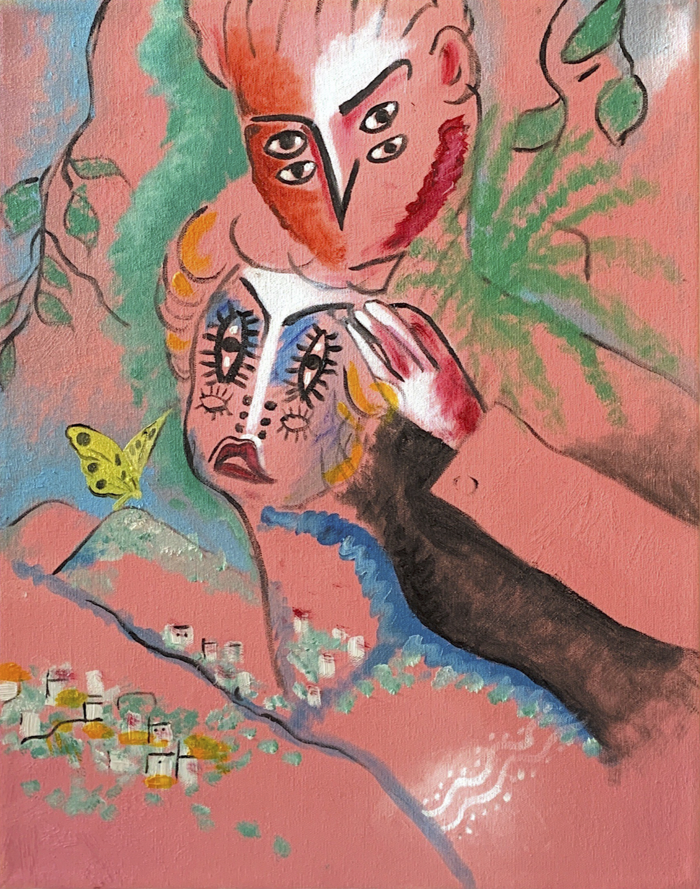
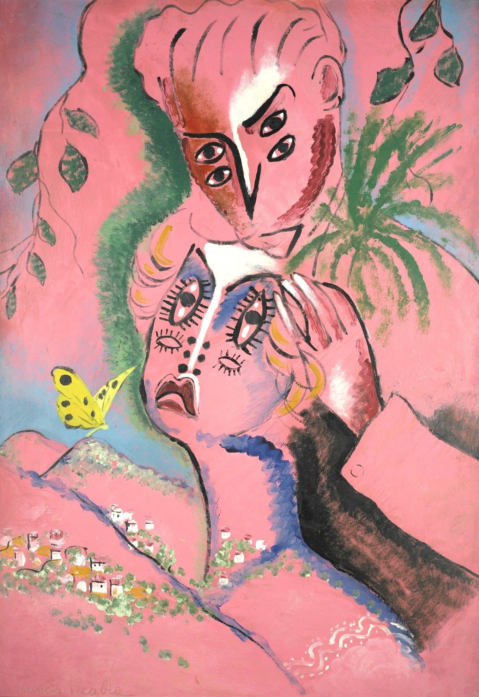

Francis Picabia "Couples Amourex" Recreation
 Oil paint on stretched canvas, 16" x 20"
The goal of this assignment in my Painting 1 course at Binghamton University was to recreate an old master or modern art piece. I chose to recreate the painting "Couples Amourex" from Francis Picabia, a French avant-garde painter. Picabia is most associate with the art style of Cubism, creating abstract pieces usually of varying portraits. From recreating this piece I realized how difficult it was to recreate abstract art; I learned that this type of art is essentially about the feeling and purpose behind the process rather than the physical painting itself. I didn't get some proportions in some areas correct and found it difficult to recreate some painting/techniques and textures. I chose to do an abstract piece because I have never painted in this style before (I usually have a realistic style), and found the process very intriguing.